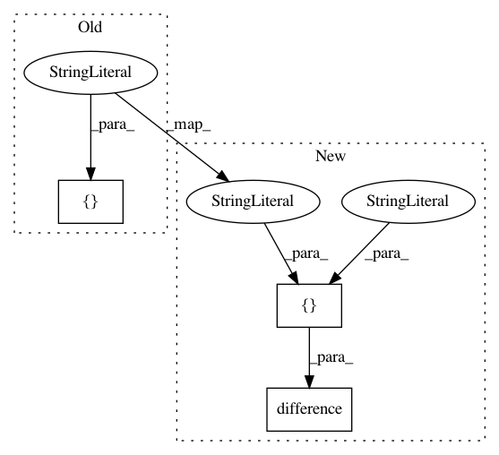

26b41f186c9288785e2045bd1cb42fb4503a7bb7,examples/cure_model.py,,,#,24
Before Change
rossi = load_rossi()
rossi["intercept"] = 1.0
covariates = {"lambda_": rossi.columns, "rho_": ["intercept"], "beta_": rossi.columns}
swf.fit(rossi, "week", event_col="arrest", regressors=covariates) // TODO: name
swf.print_summary(4)
After Change
rossi = load_rossi()
covariates = {
"lambda_": rossi.columns.difference(["week", "arrest"]),
"rho_": ["1"],
"beta_": rossi.columns.difference(["week", "arrest"]),
}
In pattern: SUPERPATTERN
Frequency: 3
Non-data size: 3
Instances
Project Name: CamDavidsonPilon/lifelines
Commit Name: 26b41f186c9288785e2045bd1cb42fb4503a7bb7
Time: 2020-07-12
Author: cam.davidson.pilon@gmail.com
File Name: examples/cure_model.py
Class Name:
Method Name:
Project Name: CamDavidsonPilon/lifelines
Commit Name: 21cec6ac2b1852e470a14ac5a333113a31e61034
Time: 2020-07-13
Author: cam.davidson.pilon@gmail.com
File Name: lifelines/tests/test_estimation.py
Class Name: TestCustomRegressionModel
Method Name: test_reparameterization_flips_the_sign
Project Name: CamDavidsonPilon/lifelines
Commit Name: 26b41f186c9288785e2045bd1cb42fb4503a7bb7
Time: 2020-07-12
Author: cam.davidson.pilon@gmail.com
File Name: examples/copula_frailty_weibull_model.py
Class Name:
Method Name: